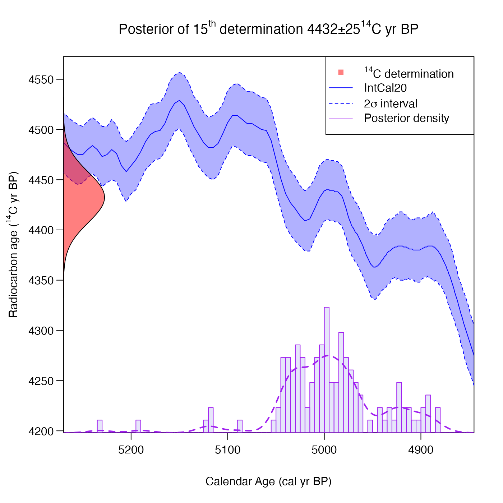
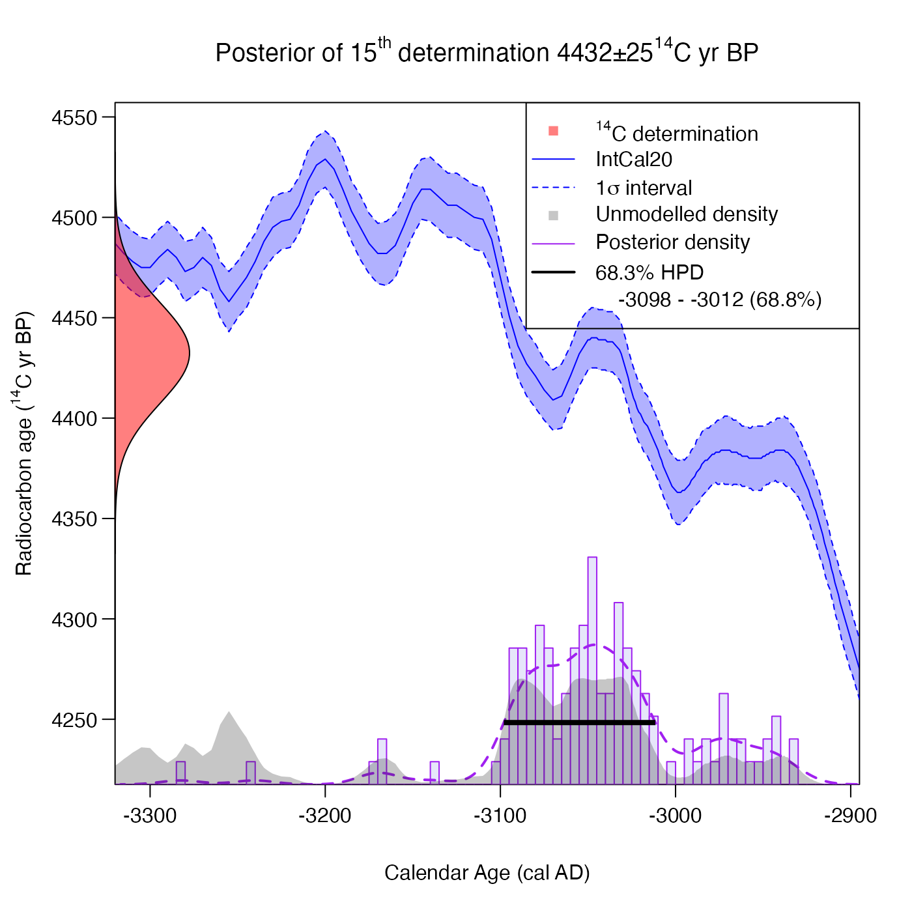

Plot Posterior Calendar Age Estimate for an Individual Determination after Joint Calibration
Source:R/PlotCalendarAgeDensityIndividualSample.R
PlotCalendarAgeDensityIndividualSample.RdOnce a joint calibration function (any of PolyaUrnBivarDirichlet, WalkerBivarDirichlet or PPcalibrate) has been run to calibrate a set of related radiocarbon determinations, this function plots the posterior calendar age estimate for a given single determination. Shown are a (direct) histogram of the posterior calendar ages generated by the MCMC chain and also a (smoothed) kernel density estimate obtained using a Gaussian kernel. The highest posterior density (HPD) interval is also shown for the interval width specified (default 2\(\sigma\)).
For more information read the vignettes: vignette("Non-parametric-summed-density", package = "carbondate") vignette("Poisson-process-modelling", package = "carbondate")
Note: The output of this function will provide different results from independent calibration of the determination. By jointly, and simultaneously, calibrating all the related \({}^{14}\)C determinations using the library functions we are able to share the available calendar information between the samples. This should result in improved individual calibration.
Usage
PlotCalendarAgeDensityIndividualSample(
ident,
output_data,
calibration_curve = NULL,
plot_14C_age = TRUE,
plot_cal_age_scale = "BP",
hist_resolution = 5,
density_resolution = 1,
interval_width = "2sigma",
bespoke_probability = NA,
n_burn = NA,
n_end = NA,
show_hpd_ranges = FALSE,
show_unmodelled_density = FALSE,
plot_pretty = TRUE
)Arguments
- ident
The individual determination for which you want to plot the posterior density estimate of the calendar age.
- output_data
The return value either from one of the Bayesian non-parametric DPMM functions (PolyaUrnBivarDirichlet or WalkerBivarDirichlet); or from the Poisson process modelling function (PPcalibrate).
- calibration_curve
This is usually not required since the name of the calibration curve variable is saved in the output data. However, if the variable with this name is no longer in your environment then you should pass the calibration curve here. If provided, this should be a dataframe which should contain at least 3 columns entitled
calendar_age,c14_ageandc14_sig. This format matches intcal20.- plot_14C_age
Whether to use the radiocarbon age (\({}^{14}\)C yr BP) as the units of the y-axis in the plot. Defaults to
TRUE. IfFALSEuses F\({}^{14}\)C concentration instead.- plot_cal_age_scale
The calendar scale to use for the x-axis. Allowed values are "BP", "AD" and "BC". The default is "BP" corresponding to plotting in cal yr BP.
- hist_resolution
The distance between histogram breaks when plotting the individual posterior calendar age density. Default is 5.
- density_resolution
The distance between calendar ages for the returned smoothed calendar age probability. Default is 1.
- interval_width
The confidence intervals to show for the calibration curve and for the highest posterior density ranges. Choose from one of "1sigma" (68.3%), "2sigma" (95.4%) and "bespoke". Default is "2sigma".
- bespoke_probability
The probability to use for the confidence interval if
"bespoke"is chosen above. E.g., if 0.95 is chosen, then the 95% confidence interval is calculated. Ignored if"bespoke"is not chosen.- n_burn
The number of MCMC iterations that should be discarded as burn-in (i.e., considered to be occurring before the MCMC has converged). This relates to the number of iterations (
n_iter) when running the original update functions (not the thinnedoutput_data). Any MCMC iterations before this are not used in the calculations. If not given, the first half of the MCMC chain is discarded. Note: The maximum value that the function will allow isn_iter - 100 * n_thin(wheren_iterandn_thinare the arguments given to PolyaUrnBivarDirichlet or WalkerBivarDirichlet) which would leave only 100 of the (thinned) values inoutput_data.- n_end
The iteration number of the last sample in
output_datato use in the calculations. Assumed to be the total number of (thinned) realisations stored if not given.- show_hpd_ranges
Set to
TRUEto also show the highest posterior density (HPD) range on the plot.- show_unmodelled_density
Set to
TRUEto also show the unmodelled density (i.e., the result of independent calibration using CalibrateSingleDetermination) on the plot. Default isFALSE.- plot_pretty
logical, defaulting to
TRUE. If setTRUEthen will select pretty plotting margins (that create sufficient space for axis titles and rotates y-axis labels). IfFALSEwill implement current user values.
Value
A data frame with one column calendar_age_BP containing the calendar ages, and the other
column probability containing the (smoothed) kernel density estimate of the probability at that
calendar age.
See also
CalibrateSingleDetermination for independent calibration of a sample against a calibration curve.
Examples
# NOTE 1: These examples are shown with a small n_iter to speed up execution.
# When you run ensure n_iter gives convergence (try function default).
# NOTE 2: The examples only show application to PolyaUrnBivarDirichlet output.
# The function can also be used with WalkerBivarDirichlet and PPcalibrate output.
polya_urn_output <- PolyaUrnBivarDirichlet(
two_normals$c14_age,
two_normals$c14_sig,
intcal20,
n_iter = 500,
n_thin = 2,
show_progress = FALSE)
# Result for 15th determination
PlotCalendarAgeDensityIndividualSample(15, polya_urn_output)

# Now change to show 1 sigma interval for HPD range and calibration curve
# and plot in yr AD
PlotCalendarAgeDensityIndividualSample(
15,
polya_urn_output,
plot_cal_age_scale = "AD",
interval_width = "1sigma",
show_hpd_ranges = TRUE,
show_unmodelled_density = TRUE)

# Plot and then assign the returned probability
posterior_dens <- PlotCalendarAgeDensityIndividualSample(15, polya_urn_output)
# Use this to find the mean posterior calendar age
weighted.mean(posterior_dens$calendar_age_BP, posterior_dens$probability)
#> [1] 4995.079